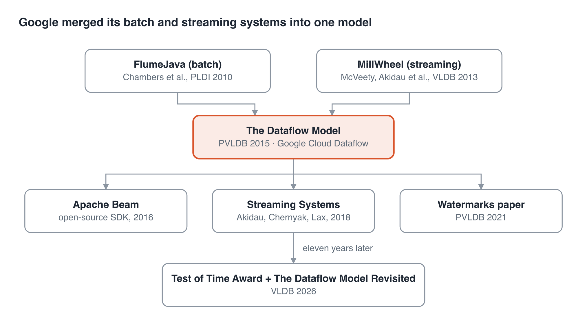

Never Wait for Completeness: What Google’s Dataflow Model Taught Me About Real-Time Smoke Alerts
A review of a 2015 VLDB paper that changed how the industry thinks about late data, read through the lens of a wildfire-smoke pipeline I built this semester.
This post summarizes and critiques the following paper. All ideas from the paper belong to its authors; the opinions, figures and experiments here are my own.
The Dataflow Model: A Practical Approach to Balancing Correctness, Latency, and Cost in Massive-Scale, Unbounded, Out-of-Order Data Processing
Tyler Akidau, Robert Bradshaw, Craig Chambers, Slava Chernyak, Rafael J. Fernández-Moctezuma, Reuven Lax, Sam McVeety, Daniel Mills, Frances Perry, Eric Schmidt, Sam Whittle (Google).
Proceedings of the VLDB Endowment, Vol. 8, No. 12, pp. 1792–1803, 2015. DOI: 10.14778/2824032.2824076 · Free PDF from VLDB
I also draw on the authors’ own follow-up: T. Akidau, R. J. Fernández-Moctezuma, R. Lax, D. Mills, “The Dataflow Model Revisited,” PVLDB 19(12): 4953–4964, 2026 (DOI).
In short
- The paper says a pipeline over endless, out-of-order data should never wait for the data to be “complete”. Instead, it should let engineers choose how much correctness to trade for speed and cost.
- It splits every pipeline into four questions (what, where, when, how), so one program runs unchanged on batch or streaming engines.
- My verdict: accept as a reviewer, fund as an investor, but skip its complex trigger language. Its own authors now say the same.
- My smoke-alert project measured the trade-off the paper only describes. Waiting 15 more minutes for late data cost 20 minutes of warning and recovered 0.07% of readings.
Every real-time pipeline has to decide how long to wait for late data. In 2015 a team at Google argued the answer is: never wait for the data to be complete. Give engineers controls to trade correctness against latency and cost instead. I read that paper for my DATA 226 significant-paper presentation, and it turned out to describe the exact trade-off my own course project measures.
Why I picked it
I wanted a paper from a top venue that my project actually builds on. This one has just won VLDB’s 2026 Test of Time Award, which goes to the VLDB paper from 10 to 12 years earlier with the most lasting impact, especially in real products.
| Evidence | What I found |
|---|---|
| Venue | Proceedings of the VLDB Endowment (PVLDB), presented at VLDB 2015 |
| Venue rank | VLDB is A* in CORE 2023, the top tier (7.65% of 784 venues) |
| Field ranking | #6 in Google Scholar Metrics, Databases & Information Systems (h5-index 90) |
| Citations | 853 on Semantic Scholar, 80 marked highly influential |
| Recognition | VLDB Test of Time Award, 2026 |
It also fits the course. Event time, windowing and watermarks are the core of streaming, and the paper’s ideas now live inside warehouse features I used in class, like Snowflake’s Dynamic Tables.
The problem in 2015
Data from web logs, phones and sensors never ends, and it arrives out of order. A phone can go offline for an hour and then upload events that happened long ago. The paper’s running example is a video provider that bills advertisers per viewing session, so the answer has to be both fast and correct.
In 2015 there was no good way to get both:
- Batch systems (MapReduce, Spark) waited until all the data was collected, so results were slow.
- Streaming systems of the time (Storm, the first Spark Streaming) were fast but often lacked exactly-once results or windows based on when events actually happened.
- The Lambda Architecture ran a batch system and a streaming system side by side, so teams had to build two pipelines and keep them in agreement.
The authors’ diagnosis was that every one of these designs assumes the input will eventually be complete. For unbounded data that day never comes, so they proposed a model built on the opposite assumption.
The big idea: four questions
The paper splits every pipeline into four separate questions. Because of that split, one pipeline can run on a batch, micro-batch or streaming engine without changing its meaning.
| Question | The paper’s answer | How my project answers it |
|---|---|---|
| What results are computed? | Transforms: ParDo per element, GroupByKey and Combine to aggregate | Corrected PM2.5 and AQI per H3 hexagon |
| Where in event time? | Windows: fixed, sliding or session, assigned by each record’s own timestamp | 10, 30 or 60-minute tumbling windows |
| When in processing time? | Triggers, usually driven by the watermark | Emit when the watermark passes the window end |
| How do later results relate to earlier ones? | Discarding, accumulating, or accumulating and retracting | Append mode: one final answer per window |
Two ideas carry the rest of the paper.
Event time is not processing time. Event time is when something happened; processing time is when the pipeline saw it. The gap between them changes all the time, so windows are defined in event time.
The watermark is only a guess. A watermark is the system’s estimate that it has seen everything up to some event time. If it moves too fast, data arrives behind it and is late. If it moves too slowly, one slow source holds back every result. So the paper adds triggers that can fire early, at the watermark, and again for late data.
The paper explains all of this with one example: ten readings that sum to 51. I redrew it below from the paper’s Figure 5, with the times read off by eye.
The paper’s ten readings, in event time and processing time
Each dot is one reading. Grey bands are 2-minute event-time windows, with each window’s true sum on top.
A batch engine returns the right sums (14, 22, 3 and 12 per two-minute window), but only at the end. A streaming engine with a watermark returns one answer per window as soon as the watermark passes it. Then the late readings arrive and the first two windows fire again with corrected values. The code is the same each time; only the trigger and engine change.
Eleven years later, the authors graded themselves
The 2026 retrospective’s verdict fits in one line: “we got the physics right, but the interface wrong.” It is unusually honest, and it gave my critique something solid to stand on.
| What the authors say | |
|---|---|
| Got right | Event time versus processing time is now standard vocabulary. Correct results became non-negotiable: exactly-once became table stakes and the Lambda Architecture was retired. Never waiting for completeness held up. |
| Got wrong | The trigger language was over-engineered; in production almost everyone used two triggers, fire at the watermark or fire every few minutes. Windows were used as a crutch for consistency. The latency “dial” was oversold, and ordering was never specified. |
| Missed | Streams and tables are the same object seen two ways. For analytics, the real answer was SQL plus incrementally maintained materialized views with a declared freshness target, such as Snowflake’s TARGET_LAG. |
One detail stood out for my project. The authors say alerts are the textbook case where a watermark is still needed, because a correction can update a number but cannot take back an alert that already went out.
(a) As peer reviewers: accept, with a minor revision
Verdict: accept, minor revisionIf this paper landed on my desk as a reviewer, I would accept it. Its ideas are clear, grounded in real systems and widely reusable. I would ask for an evaluation section before publication.
| Criterion | My score | Why |
|---|---|---|
| Novelty | ●●●●● 4/5 | Watermarks and windows existed before (MillWheel, punctuations), but unifying batch and streaming under four questions was new. |
| Clarity | ●●●●● 5/5 | One ten-reading example explains every concept, which is rare in a systems paper. |
| Practical relevance | ●●●●● 5/5 | Every feature is motivated by a real Google pipeline: billing, user sessions, abuse and anomaly detection. |
| Evaluation | ●●●●● 2/5 | No throughput, latency or cost numbers; implementation details are skipped “for brevity”. |
| Reproducibility | ●●●●● 3/5 | The open-source SDK came later (Apache Beam, 2016); the paper alone is not enough to rebuild the system. |
Strengths
- The what / where / when / how split is clean, and Flink, Spark Structured Streaming and Kafka Streams all adopted parts of it.
- Batch becomes a special case of streaming, so choosing an engine no longer changes whether the answer is correct.
- The paper is honest about trade-offs: it never claims you can have full correctness, low latency and low cost at once.
Weaknesses and requests to the authors
- Add a quantitative evaluation: throughput, latency and cost on at least one real pipeline.
- Specify how the watermark is computed and passed between stages. It is only described as a heuristic here; this was formalized later in a 2021 PVLDB paper.
- Justify the complexity of the trigger language with user evidence, which the authors now concede was missing.
- Measure the cost of keeping state around for late data and retractions.
Evidence from my own project. Because the model leaves the exact watermark rules open, engines differ in the details. I found that Spark (3.4 and later) drops late rows using the previous micro-batch’s watermark, not the current one. My first simulator used the current one, and only an automated test against the real engine caught the mismatch. A precise specification in the paper would have prevented this kind of drift.
(b) Industry view: fund it
The idea is commercially proven. It became Google Cloud Dataflow, a paid managed service, and Apache Beam, its open SDK. Apache Flink built directly on the model, and Spark Structured Streaming and Kafka Streams adopted watermarks in simpler form.
The strongest sign is that the freshness idea now ships in every major data platform under a different name:
| Year | Product | Freshness setting |
|---|---|---|
| 2021 | Delta Live Tables | refresh triggers |
| 2022 | BigQuery materialized views | max_staleness |
| 2023 | Snowflake Dynamic Tables | TARGET_LAG |
| 2024 | Apache Flink materialized tables | FRESHNESS |
If I sat on a company’s internal patent review board in 2015, this is the memo I would write:
- Fund the platform. One pipeline instead of the Lambda Architecture’s two cuts both engineering and compute cost.
- Protect it through the service, not patents. Publishing the model openly and releasing an open SDK makes our own runner the reference implementation. The value comes from adoption, and a patent would slow adoption down.
- Risks. Free runners such as Flink and Spark will commoditize the engine, and most analytics customers are happy with minutes of freshness, not milliseconds.
- Do not fund more work on the trigger language. Put that money into declarative SQL with freshness targets, which is where users went.
(c) The code: Apache Beam, and my own replay
The authors did release code. The Dataflow SDK became Apache Beam: Apache-2.0, about 8.7k GitHub stars and 4.8k forks, with Java, Python and Go SDKs and runners for Dataflow, Flink and Spark. In Beam’s Python SDK, the paper’s four questions map almost one-to-one onto a few lines:
# What: sum readings per key. Where: 2-minute event-time windows.
# When: fire at the watermark, then again for each late reading (up to 10 minutes).
# How: accumulate, so each new pane replaces the previous answer.
sums = (
readings
| beam.WindowInto(
window.FixedWindows(2 * 60),
trigger=trigger.AfterWatermark(late=trigger.AfterCount(1)),
allowed_lateness=10 * 60,
accumulation_mode=trigger.AccumulationMode.ACCUMULATING)
| beam.CombinePerKey(sum)
)I read the parts of the codebase that handle late data:
- Late data is observable.
LateDataDroppingDoFnRunner(Java runners-core) drops an element only when the window’s end plus the allowed lateness is behind the input watermark. It counts every drop in adroppedDueToLatenessmetric, so data loss can be monitored. That is good engineering: silent loss is the worst kind. - Triggers are the hard part. The Python SDK’s
trigger.pyis 1,765 lines with about 15 trigger classes. It even carries aDataLossReasonflag that warns when a trigger may finish early and silently lose data, which matches the authors’ own regret about the trigger language. - Portability is the architecture. One SDK API runs on many engines, so the paper’s claim that engine choice is a latency and cost decision is literally how the code is organized. The efficiency cost is memory: state for every key and window is kept until the window’s lateness deadline passes.
My own version
To show the trade-off live in class, I wrote watermark_demo.py, about 120 lines of plain Python with no libraries. It replays the paper’s ten readings (Figure 1 above) through two late-data policies. The core of the “drop late data” policy is a few lines:
for k, rows in batches(): # one micro-batch per processing minute
for value, ev in rows:
w = window_of(ev)
if w[1] <= prev_wm: # window already closed: drop the row
dropped.append(value); continue
sums[w] = sums.get(w, 0) + value
max_event = max(max_event, ev)
wm = max_event - allowed_delay # watermark = newest event seen, minus slack
...
prev_wm = wm # Spark judges the next batch by this onePolicy 1 drops late data, which is what Spark and my project do:
| Allowed delay | Readings counted | Dropped as late | First final answer |
|---|---|---|---|
| 0 min | 34 of 51 | 8, 9 | 12:07 |
| 1 min | 42 of 51 | 9 | 12:07 |
| 2 min | 42 of 51 | 9 | 12:07 |
| 5 min | 51 of 51 | none | 12:09 |
Policy 2 re-fires on late data, the paper’s default. Each window gets an on-time answer once the watermark passes its end, and a corrected one when late readings arrive: the second window goes from 14 to 22 at 12:08 and the first from 5 to 14 at 12:09. The last window, 12:06 to 12:08, is still open when the replay ends, because the watermark never reaches 12:08. That is correct and early, but whoever reads the output must handle updated answers.
If I were coding the model from scratch, I would keep state per key and window in event time and advance the watermark once per micro-batch as the maximum event time seen minus the allowed delay. I would emit a window when the watermark passes its end, then pick a late-data policy: drop, or re-fire and let consumers overwrite.
(d) The authors: two teams, one model
The paper exists because Google’s batch team and streaming team agreed on one model. FlumeJava was the batch side; MillWheel was the streaming side.

Four authors explain most of the synergy:
- Tyler Akidau, lead author, worked on MillWheel and later wrote O’Reilly’s Streaming Systems (2018) with Reuven Lax and Slava Chernyak. Akidau went on to Snowflake, co-authored the Dynamic Tables paper there (SIGMOD 2025), and lists Redpanda as the 2026 affiliation.
- Craig Chambers was a University of Washington professor known for the Cecil language before joining Google in 2007, and was first author of FlumeJava, the batch half of the model.
- Rafael J. Fernández-Moctezuma had published research on punctuations in data stream systems (CIDR 2009). The 2026 retrospective credits this work with the team’s academic grounding.
- Daniel Mills worked on MillWheel and later on Snowflake’s change queries (SIGMOD 2023).
The mix was compiler and batch experts, streaming engine builders, and a stream-processing researcher. Several of them later built the warehouse features my course uses. That last point inspired me most: the same people carried one idea from a research paper into three generations of products.
How it shaped my project, SmokeStream
My DATA 226 project turns readings from crowdsourced PurpleAir air sensors into real-time wildfire smoke alerts, and every streaming choice in it is one of the paper’s four questions. The pipeline runs Kafka into Spark Structured Streaming, with MongoDB for live queries, Snowflake for history and Airflow for orchestration. I replay three San Francisco Bay Area fire seasons: 2020, 2021 and 2024.
| Paper concept | Where it lives in SmokeStream |
|---|---|
| Event time vs. processing time | The replay re-sends history with real arrival delays measured from live sensors (median staleness 79.5 s) |
| Windows | 10, 30 and 60-minute tumbling windows per sensor and H3 hexagon |
| Watermark | Late-data tolerance swept from 0 to 30 minutes |
| Accumulation | Append mode, one final answer per window, because an alert cannot be un-sent |
| Batch as a bounded stream | A batch job runs the same code with full hindsight as the baseline |
The paper describes the trade-off between correctness and latency; my project measures it. These preliminary results cover the 2020 season (August 1 to September 30), using the measured delay profile and 10-minute windows:
Warning time lost by waiting
Median minutes of warning before the official hourly value
Data recovered by waiting
Share of readings missed as late, %
| Watermark | Final decision after window end | Median warning before official value | Readings missed as late |
|---|---|---|---|
| 0 min | 21 min | 109 min | 2.07% |
| 5 min | 31 min | 99 min | 2.04% |
| 15 min | 41 min | 89 min | 2.00% |
Waiting 15 more minutes costs 20 minutes of warning but recovers only 0.07% of readings. The roughly 2% I miss come from sensors that drop out for long stretches, so no reasonable watermark can wait for them. That is the paper’s core principle, never rely on completeness, showing up in real public-health data.
What I learned
- Keep the two clocks apart. Event time and processing time are different axes, and every streaming decision starts from that.
- Completeness is a guess. A watermark trades latency for correctness; it is never a guarantee.
- Batch is a bounded stream. The four-question split lets one codebase run on batch, micro-batch or streaming engines, which is why my batch and streaming jobs share code.
- Late data needs an explicit policy. Dropping is cheap and final; re-firing is correct but pushes updates onto consumers. Alerts need final answers.
- Interfaces decide adoption. Users converged on two triggers and on declared freshness targets like
TARGET_LAG, not on a rich trigger language. - Sound ideas outlive a weak interface. Parts of the paper aged badly, yet its core won a Test of Time Award.
How the work could be extended
- Measure the trade-off the paper only describes. A benchmark of correctness, latency and cost across engines; my watermark sweep is one real-world example.
- Adaptive watermarks per source. Learn each sensor’s delay profile instead of using one global tolerance, so slow sources stop holding back fast ones.
- Fire-once guarantees for actions. Alerts and notifications cannot be retracted, and the 2026 retrospective names this as an open need.
- Declared freshness in the warehouse. Rebuild my Snowflake layer with Dynamic Tables and
TARGET_LAG, and compare it with my hand-built windows. - Ordering semantics. Per-key ordering guarantees, which the authors admit the model never specified.
References
- T. Akidau, R. Bradshaw, C. Chambers, S. Chernyak, R. J. Fernández-Moctezuma, R. Lax, S. McVeety, D. Mills, F. Perry, E. Schmidt, S. Whittle. The Dataflow Model: A Practical Approach to Balancing Correctness, Latency, and Cost in Massive-Scale, Unbounded, Out-of-Order Data Processing. PVLDB 8(12): 1792–1803, 2015.
- T. Akidau, R. J. Fernández-Moctezuma, R. Lax, D. Mills. The Dataflow Model Revisited. PVLDB 19(12): 4953–4964, 2026.
- T. Akidau, E. Begoli, S. Chernyak, F. Hueske, K. Knight, K. Knowles, D. Mills, D. Sotolongo. Watermarks in Stream Processing Systems: Semantics and Comparative Analysis of Apache Flink and Google Cloud Dataflow. PVLDB 14(12): 3135–3147, 2021.
- T. Akidau et al. MillWheel: Fault-Tolerant Stream Processing at Internet Scale. PVLDB 6(11): 1033–1044, 2013.
- C. Chambers et al. FlumeJava: Easy, Efficient Data-Parallel Pipelines. PLDI 2010: 363–375.
- M. Armbrust et al. Structured Streaming: A Declarative API for Real-Time Applications in Apache Spark. SIGMOD 2018: 601–613.
- T. Akidau, S. Chernyak, R. Lax. Streaming Systems. O’Reilly Media, 2018.
- D. Sotolongo, D. Mills, T. Akidau et al. Streaming Democratized: Ease Across the Latency Spectrum with Delayed View Semantics and Snowflake Dynamic Tables. SIGMOD Companion 2025.
- Apache Beam source code, accessed November 2026.
- VLDB Test of Time Award, ICORE conference portal, Google Scholar Metrics, Semantic Scholar, all accessed November 2026.